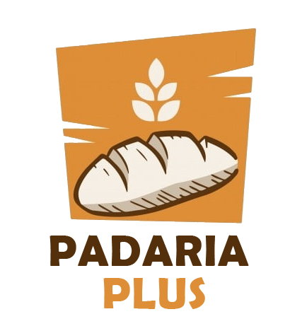
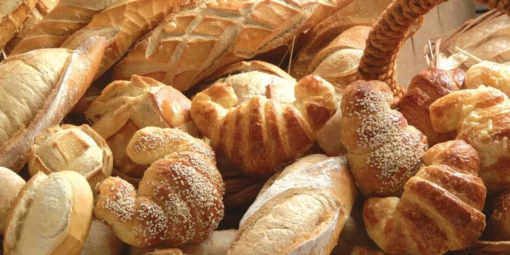
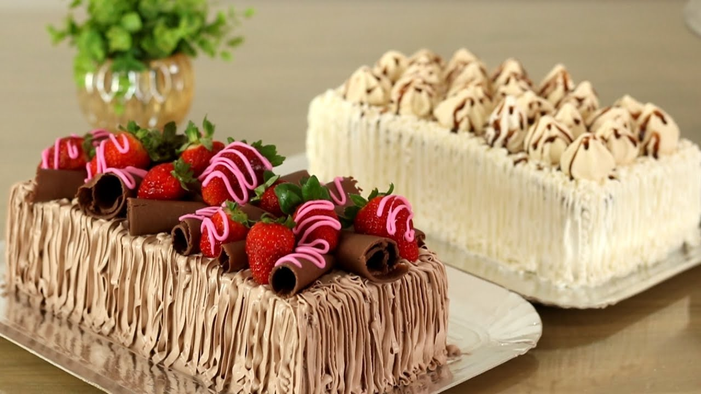

O melhor de nossos pães e bolos para você
Desde 2001, o lugar mais gostoso da cidade


Desde 2001, o lugar mais gostoso da cidade
Temos um processo de fabricação 100% caseiro. Esse foi um dos maiores motivos que ficaram com a padaria plus e mais propensão aos nomes feito. Temos um pão único de pura qualidade.

Uma viagem para a Itália não foi cozinhar alguns ingredientes que não reservados para dar o mesmo do bolo ficar macta e saboroso. Hoje temos um produto incomparável.

Endereço: Localizado na Avenida Santos Ágaz nº 456
Nosso telefone: (99) 99999-9999
Estamos funcionando nos seguintes horários:
Segunda a sexta: 7h às 16h
Sábados e domingos: 7h às 13h
Feriados: 8h às 12h